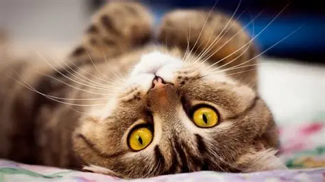

Gato Manhoso
O gato ou gato doméstico é um mamífero carnívoro da família
dos felídeos, muito popular como animal de estimação.
Ocupando o topo da cadeia alimentar, é predador natural de diversos animais,
como roedores, pássaros, lagartixas e alguns insetos. Segundo pesquisas
realizadas por instituições norte-americanas, os gatos consistem no
segundo animal de estimação mais popular do mundo, estando numericamente
atrás apenas dos peixes de aquário. Consta em trigésimo nono na lista das 100
das espécies exóticas invasoras mais daninhas do mundo da União Internacional
para a Conservação da Natureza.
